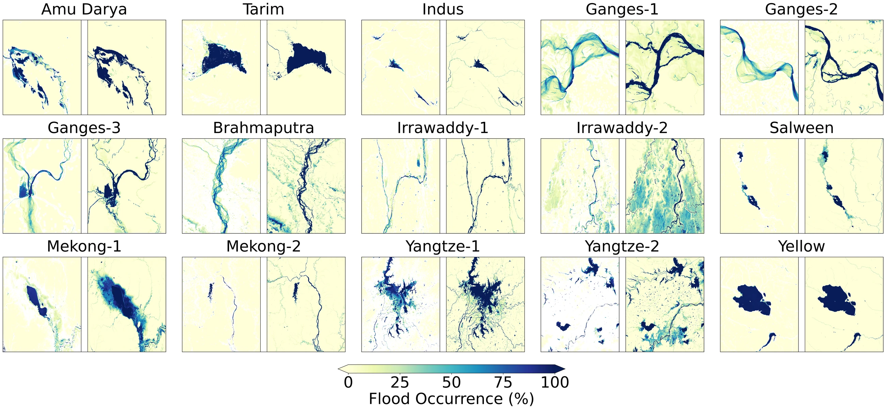

Asian Water Tower
Visualizing river networks, historical dam development, and spatial flood patterns across major river basins of the Asian Water Tower.
River network across discharge thresholds
This animation illustrates how the represented river network across the Asian Water Tower changes as the discharge threshold used to display rivers is varied. It visualizes drainage connectivity and the spatial organization of modeled river flow across major Asian basins. The progression is through discharge thresholds—not chronological growth in river channels—and highlights the capacity to process and communicate large-scale hydrodynamic model outputs.
Historical expansion of dam infrastructure
This animation maps the historical development of dam infrastructure across the Asian Water Tower region. Locations, dam categories, and a cumulative-count graphic reveal the progressive expansion and distribution of engineered water-control structures over time. Placing infrastructure development alongside major river systems provides a visual basis for considering how human water management intersects with basin-scale hydrology.
Flood occurrence across major Asian basins

The basin-by-basin panels summarize simulated flood occurrence across the Asian Water Tower, highlighting substantial geographic differences in where flooding is represented within individual river systems. This type of spatial comparison helps distinguish regional patterns that would be difficult to interpret from basin-average statistics alone. The visualization demonstrates multi-basin flood mapping and analysis of large hydrodynamic datasets.